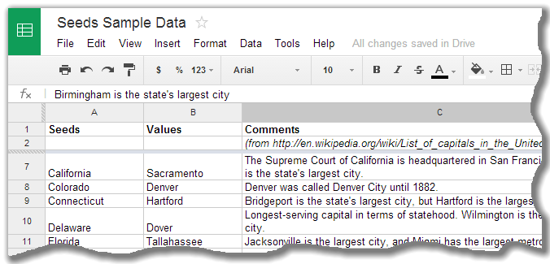

Seeds 4.2 is an app that can query a key/value spreadsheet.
The app connects to a Google Spreadsheet that has "seeds" and "values" columns.
You can then search for seeds using a simple filter and
the app displays the corresponding values but initially hides them
till you individually click on them to reveal them for a few seconds.
What is good for? I use it as a simplified flash card system. Say you need to learn a list of capitals,
click on any line to reveal the answer. Here's an example:
Note that the app never changes the spreadsheet. It only reads from it.
To change the data, simply open the underlying spreadsheet using Google Drive.
Accounts & Permissions Requested
To begin, sign-in using a Google account and follow the prompts the accept the Google Drive permissions.
The application uses the following permissions:
Google Drive API in read-only access, to get the list of spreadsheets from the user.
This allows the user to select one of its own spreadsheets.
Google Spreadsheet API in read-only access. Once a spreadsheet has been selected, the
app queries that spreadsheet for seeds and displays the values. The spreadsheet is
never modified by the app.
Usage
To continue, the user must select a spreadsheet. Note that the Android app cannot
create the spreadsheet, it has to be done by the user itself either from the Google Drive
app or from the Google Drive web site.
The spreadsheet must be created with the following simple format:
Column A: Seeds (what the user searches for).
Column B: Values (initially hidden til tapped by the user).
Column C...Z: Optional comments/details for each entry.
Here's an example of Spreadsheet:

To use the app, simply enter a search pattern. The matching rows from the spreadsheet are shown and
then the user can tap each entry to reveal the answer.
Alf-Labs Android App Privacy Policy
The application complies with the privacy and security policies set by the Android Play Store.
The application does NOT collect nor transmit personal or sensitive user data.
Some Android permissions are considered sensitives. The following non-exclusive list explains some usage:
Google Sign-In API:
The Account API is used to be able to allow the user to select which account to use.
Google Drive API:
Google Drive documents are accessed solely as read-only for local usage.
Google Spreadsheet API:
Google Spreadsheet documents are accessed solely as read-only for local usage.